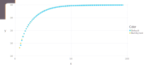
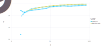

Fluorescence Yields
Let's investigate the fluorescence yield algorithms
using NeXLCore
using Gadfly
function plotyields(sss::SubShell...)
x, y, c = Float64[], Float64[], String[]
for ss in sss
for ass in atomicsubshells(ss)
push!(x, z(element(ass)))
push!(y,fluorescenceyield(ass, NeXLCore.NeXL))
push!(c,repr(ss))
end
end
for ass in atomicsubshells(sss[1])
push!(x, z(element(ass)))
push!(y, meanfluorescenceyield(element(ass), shell(ass), NeXLCore.Bambynek1972))
push!(c, "Bambynek")
end
plot(x=x,y=y,color=c, Scale.y_log10(maxvalue=1.0))
end
display(plotyields(ksubshells...))
display(plotyields(lsubshells...))
display(plotyields(msubshells...)) 